Level 1 · Learn
Teach new players the basics (dashing, long jumps and wall jumps) and introduce spikes. Slow, calm pacing with little suspense.
Three platformer levels for PICO-8, each redesigned over several iterations based on playtesting, feedback and research.
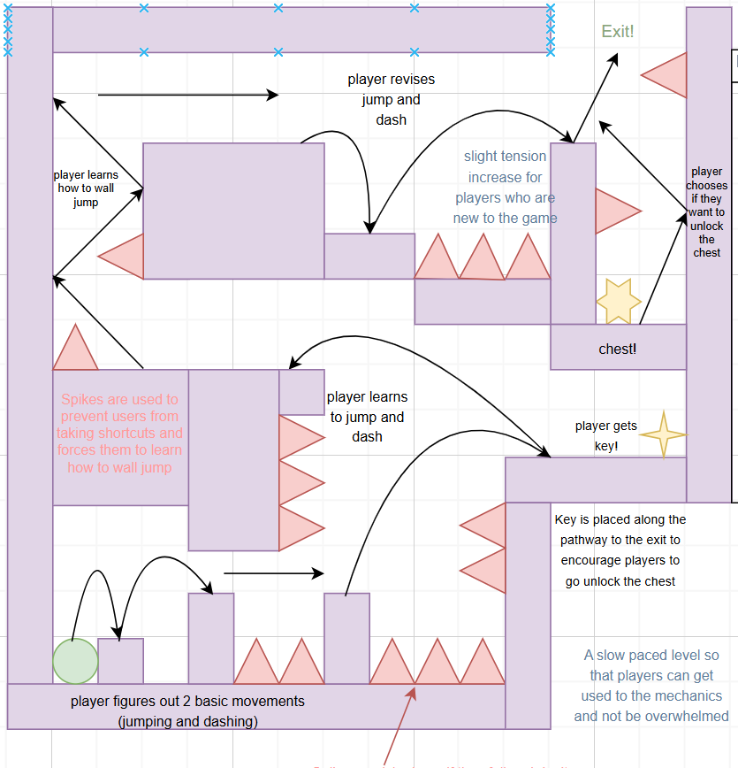
For this 2D game design project, I designed three platformer levels for PICO-8. I started each level by setting a goal for what the player should learn, then sketched the layout and kept reworking it as I gathered feedback. By the end, the three levels had gone through 11 design versions between them.
Design three levels in PICO-8 that make use of game design fundamentals.
Before drawing anything, I set a goal for each level and the pacing I wanted. Every later change was checked against these goals.
Teach new players the basics (dashing, long jumps and wall jumps) and introduce spikes. Slow, calm pacing with little suspense.
Push for more precise jumps and long dashes through tight spaces, and introduce the spring.
Revise everything, testing the player by making them combine mechanics in new ways to get through.
I used four different sources of feedback, and each one caught problems the others missed.
Watching people play similar games showed me they tend to head towards wherever the key is. I used key and chest placement to guide players down my intended path without it feeling forced.
Friends playtested my levels and found shortcuts I hadn't intended, and told me where a level was too easy for its goal.
I brought each draft to my teacher, who helped me cut options that overwhelmed new players and remove spaces with no clear purpose.
Reviewing friends' levels, and explaining my own design choices out loud, made me spot the same mistakes in my own work.
Every version of each level, what changed, and the feedback that led to it. Click any design to see it full size.
Player Spike Spring Key (4-point star) Chest (6-point star)
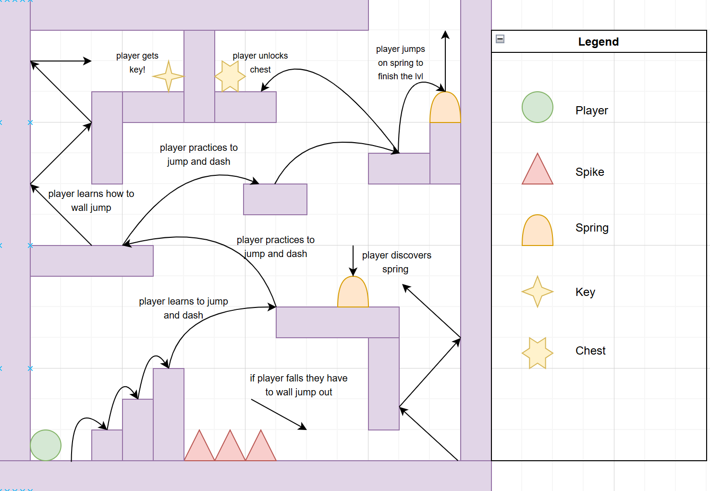
The first layout, built around teaching dashing, long jumps and wall jumps while introducing spikes.
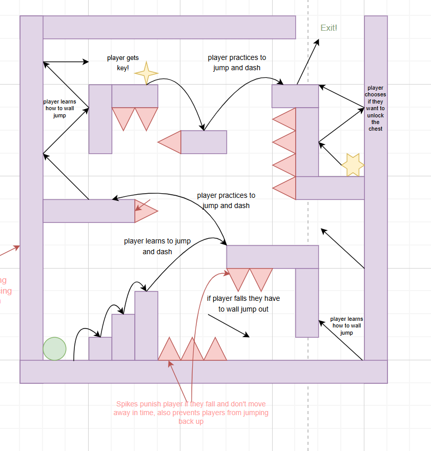
I was worried the level would overwhelm new players. My teacher agreed and suggested removing elements and giving players fewer possible routes to the exit. I removed the optional wall jump at the top, since it didn't fit what I wanted players to learn by the end.
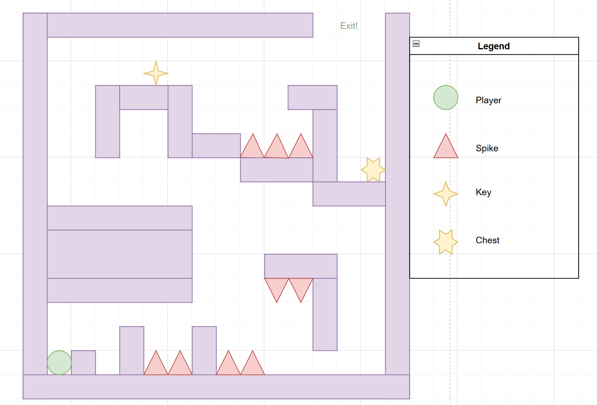
I set the pacing for the level: slow and calm with little to no suspense, so new players could get a good grasp of the basics before anything harder.
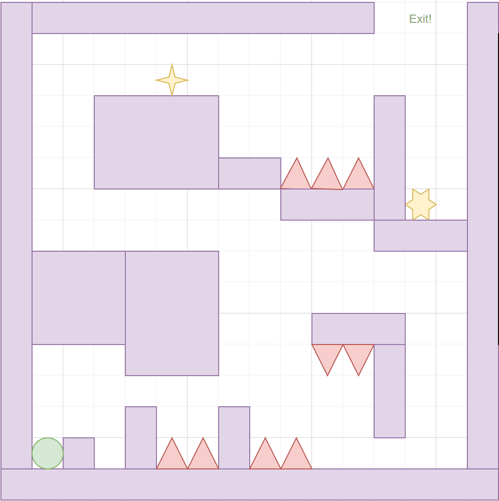
Friends found alternative ways through parts of the level, so I added spikes to block those shortcuts and push players onto the mechanic each section was meant to teach. While giving feedback on a friend's level, I noticed they asked for a jump + dash before ever teaching the dash. Then I realised my own level did the same, so I reworked the start so players learn to dash first.
My teacher pointed out some odd, empty spaces and areas without a clear intention. I removed them and reshaped parts of the map so the path is clearer and every section has a purpose.
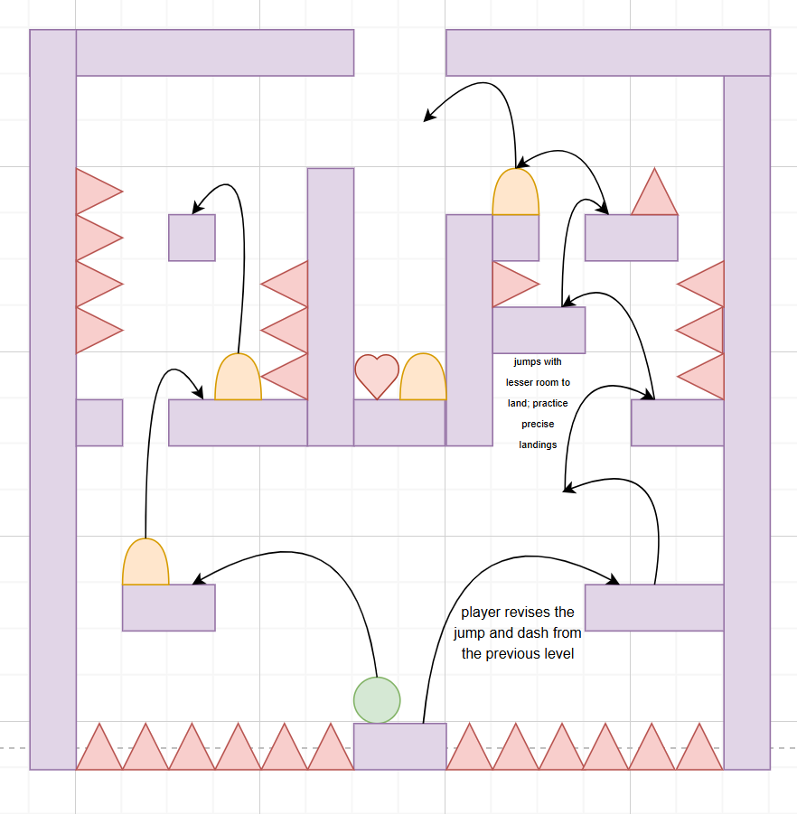
Tight spaces with little room to land, to train more precise jumps and long dashes, and the first appearance of the spring.
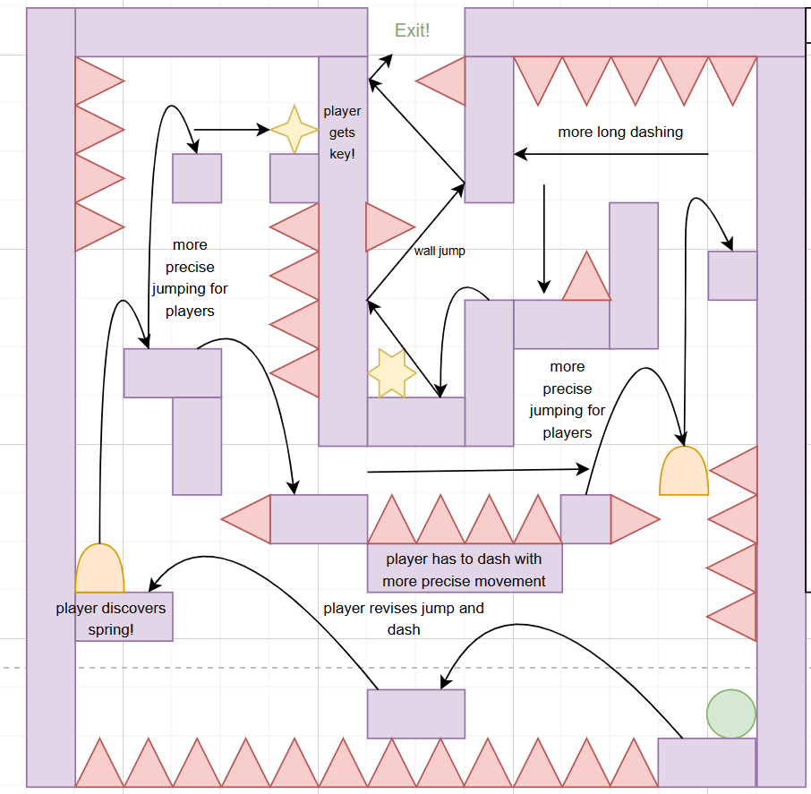
After learning that players naturally follow the key, I saw that my first layout didn't lead players along the path I wanted. I redesigned the layout around where the key and chest sit.
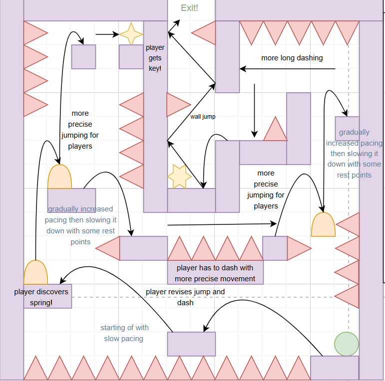
While explaining to friends how I introduced the spring, I realised it was only used once. A one-off use made it feel unimportant, so I added more chances to use the spring in meaningful ways. That way, players build familiarity with it and it feels rewarding.
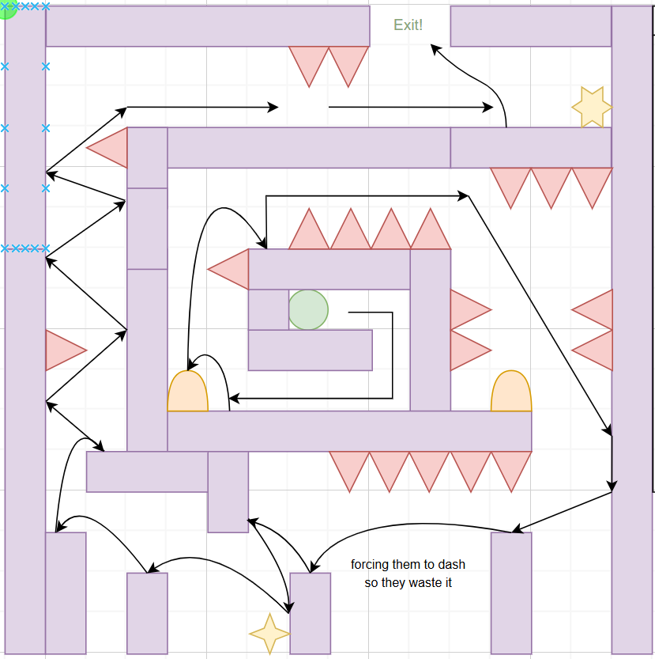
A spiral layout meant to test everything the player has learned by combining mechanics to find a way through.
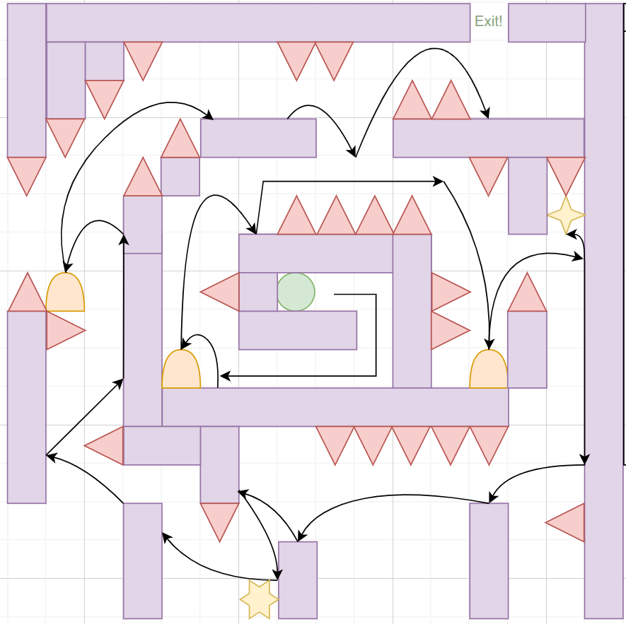
Friends felt the level didn't fully meet its goal, because it wasn't challenging enough and didn't make players combine mechanics. I added more demanding sections that require several mechanics together.
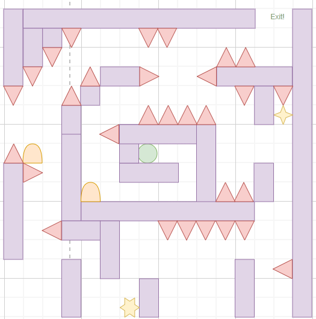
While reviewing friends' levels, I found parts that were impossible because of miscounted blocks. That made me re-check my own level, and I found some paths that were overly tricky or not possible at all, so I fixed them.
Making Level 1 teach the basics without overwhelming new players. My early drafts offered too many routes, allowed shortcuts past the mechanics I wanted to teach, and asked for a jump + dash before teaching the dash.
I took it through five versions, combining feedback from my teacher, playtests with friends and lessons from reviewing their levels. I cut optional paths, blocked shortcuts with spikes, reordered the opening and removed areas without a clear purpose.
Explaining my design to others helped me see it more clearly and catch problems I would have missed on my own. Giving feedback was just as useful as receiving it: spotting a mistake in a friend's level often meant finding the same one in mine.